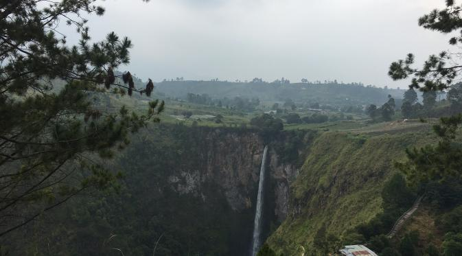

Indahnya Danau Toba dari Atas Air Terjun Sipiso-piso
Kabupaten Banyuwangi, wilayah bagian paling ujung Jawa Timur yang dipisahkan dengan Pulau Dewata oleh selat Bali punya beragam keindahan. Alamnya menjadi oase di tengah gempita destinasi wisata yang ramai. Namanya Pulau Tabuhan. Wilayahnya memang merupakan bagian dari Banyuwangi. Letaknya tak jauh dari Kota Banyuwangi. Pulau Tabuhan berada di Selat Bali namun masih masuk dalam wilayah Desa Bangsring, Kecamatan Wongsorejo, Banyuwangi.
Pulau Tabuhan merupakan pulau kosong, tak berpenghuni. Untuk mengelilingi pulau ini hanya dibutuhkan waktu sekitar 15 menit, jalan kaki, karena luasnya hanya lima hektar. Selain itu, Pulau Tabuhan bisa ditempuh dalam waktu sekitar satu jam perjalanan dengan perahu sewaan dari Pantai Bangsring maupun Watu Dodol. Sepanjang perjalanan, pelancong akan disuguhi panorama yang sangat elok di Selat Bali. Gradasi warna laut dari hijau, kemudian berubah jadi biru, serta burung camar yang melintas.

Seperti tak ingin menyia-nyiakan keindahan alam tersebut, Kementerian Pariwisata tengah gencar mendorong pengelola wisata setempat untuk menyediakan fasilitas untuk kegiatan Meeting, Incentive, Convention, dan Exhibition (MICE). Sebab, kegiatan MICE akan memberikan dampak positif yang berlipat ganda pada sektor ekonomi di wilayah tersebut.
Selain itu, sektor lainnya yang berhubungan dengan kegiatan pariwisata pun akan lebih berkembang. Ini karena kegiatan MICE akan melibatkan wisatawan yang cenderung tinggal lebih lama dan menghabiskan uang lebih banyak dibanding turis biasa.